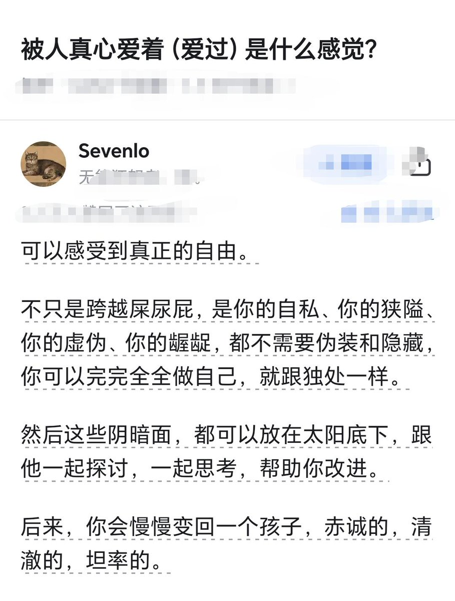

氫氣球
@allnightforlive
@Ericup2023 之前也有人讓我安逸到我覺得我回到過去的時候會很痛苦，雖然是這樣沒錯，但我到現在還是忘不了他說我之前真的一副下一秒我就會隨便找一個人殉情的感覺w
他可能是個很稱職的愛人吧，但我也是很努力的被愛了嗯⋯被愛好可怕（結論（（

Eric_SF
@Ericup2023
这说的也太太太太太有道理了吧！ https://t.co/u9xKr6eZ8V